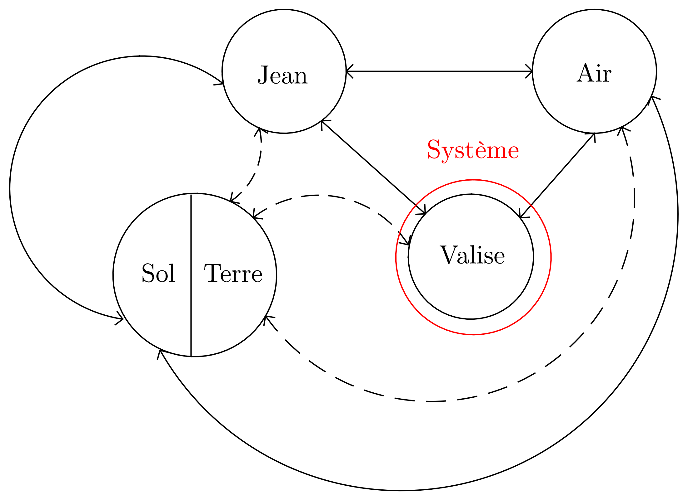
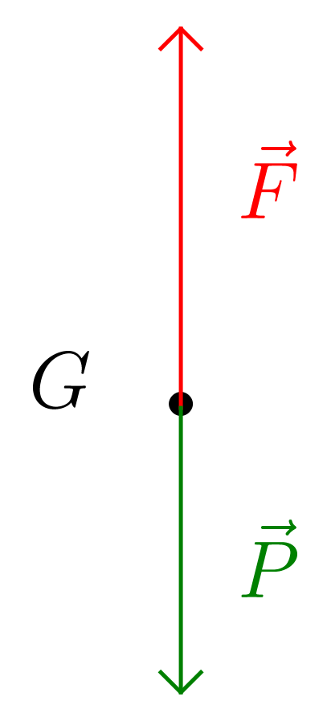

Méthode
- Établir le diagramme objets-interactions.
- Définir le système mécanique.
- Indiquer le référentiel dans lequel le mouvement est étudié et préciser qu’il sera considéré comme étant galiléen (en terminale au moins).
- Faire le bilan des interactions auxquelles le système mécanique est soumis et modéliser chacune des interactions en donnant le maximum de détails.
- Schématiser la situation.
- Raisonnement 1 Écrire la deuxième loi de Newton appliquée au centre d’inertie du système.
- En déduire le vecteur accélération du centre d’inertie du système.
- (Si l’exercice le demande) Remonter aux équations horaires du mouvement.
- Raisonnement 2 Si le problème est à une dimension et/ou se concentre sur deux positions du mouvement, utiliser le théorème de l’énergie cinétique ou le théorème de l’énergie mécanique (cf. rappels de première sur l’énergie du chapitre 8).
Exemple
Jean soulève une valise de masse $m = \pu{25 kg}$. Quelle est la valeur de l’accélération du centre d’inertie de la valise si la force exercée sur celle-ci par Jean est verticale et a pour valeur (constante) $F = \pu{300 N}$ ?
Donnée :
- $g = \pu{10 N.kg-1}$
Réponse
-
Diagramme objets-interactions : 
-
Système = {Valise}
-
Référentiel = {terrestre, considéré galiléen}
-
Interactions :
- Valise – Terre, modélisée par le poids, force verticale dirigée vers le bas de valeur $P = mg$ ;
- Valise – Air, négligée dans ce problème ;
- Valise – Jean, modélisée par une force $\vec{F}$ verticale, dirigée vers le haut et de valeur $F = 300 \text{N}$.
-
Schématisation : 
-
Deuxième loi de Newton : $$m \vec{a} = \vec{P} + \vec{F}$$ Méthode 1 : Analyse du problème et utilisation des valeurs des vecteurs (pas toujours facile)
La valeur de la force $\vec{F}$ est supérieure à la valeur de la force $\vec{P}$, on peut donc immédiatement conclure que, puisque ces vecteurs sont colinéaires, le vecteur $\vec{a}$ possède la même direction que ces deux vecteurs et possède le sens du vecteur $\vec{F}$ avec $a = \dfrac{1}{m}\, (F - P) = \dfrac{F}{m} - g$.
A.N. $a = \dfrac{\pu{300 N}}{\pu{25 kg}} - \pu{10 N.kg-1} = \pu{2 N.kg-1} = \pu{2 m.s-2}$.
Méthode 2 : Projection de la deuxième loi de Newton dans un repère (méthode assez systématique)
Toutes les forces sont verticales, il est donc suffisant de définir un repère $(O ; \vec{k})$ avec $\vec{k}$ un vecteur unitaire vertical dirigé vers le haut.
Dans ce repère, $\vec{a} = a_{z}\, \vec{k}$, $\vec{F} = F\, \vec{k}$ et $\vec{P} = -P\, \vec{k}$, donc la projection de la deuxième loi de Newton est $$ ma_{z} = F - P \Leftrightarrow a_{z} = \dfrac{1}{m}\, (F - P) = \dfrac{F}{m} - g $$ A.N. $a_{z} = \dfrac{\pu{300 N}}{\pu{25 kg}} - \pu{10 N.kg-1} = \pu{2 N.kg-1} = \pu{2 m.s-2}$
La projection de l’accélération sur l’axe $(O z)$ est positive, l’accélération est donc un vecteur vertical dirigé vers le haut.